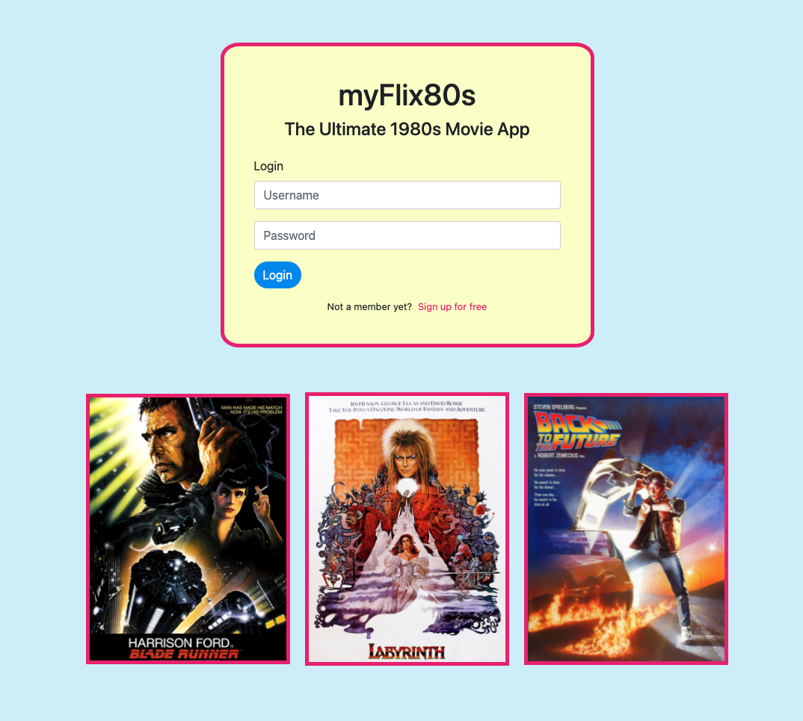
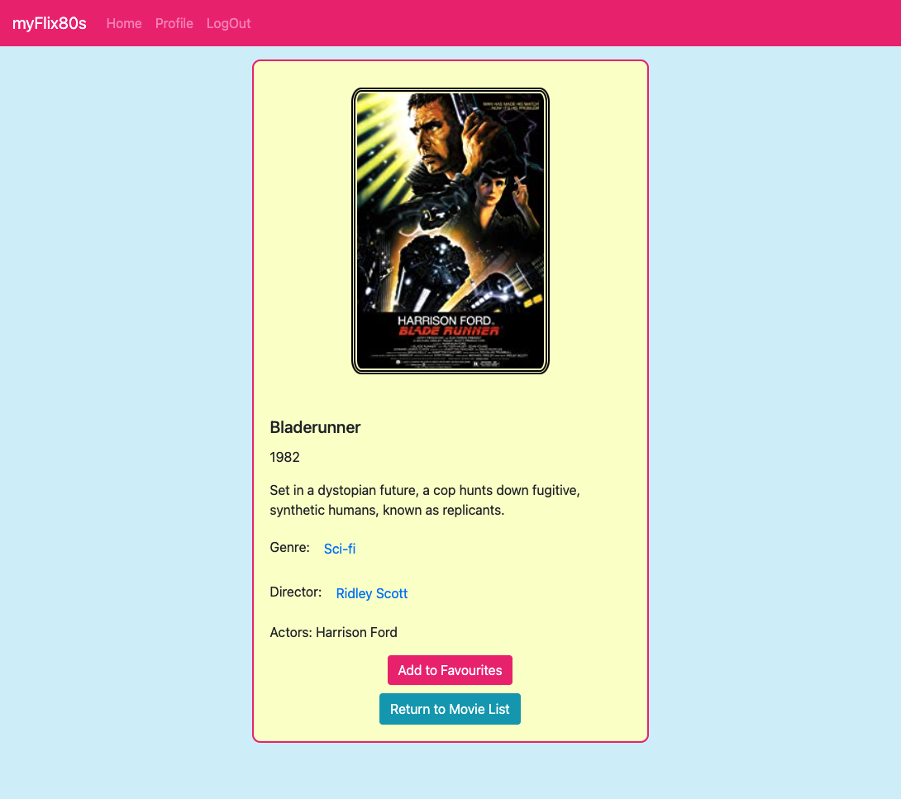
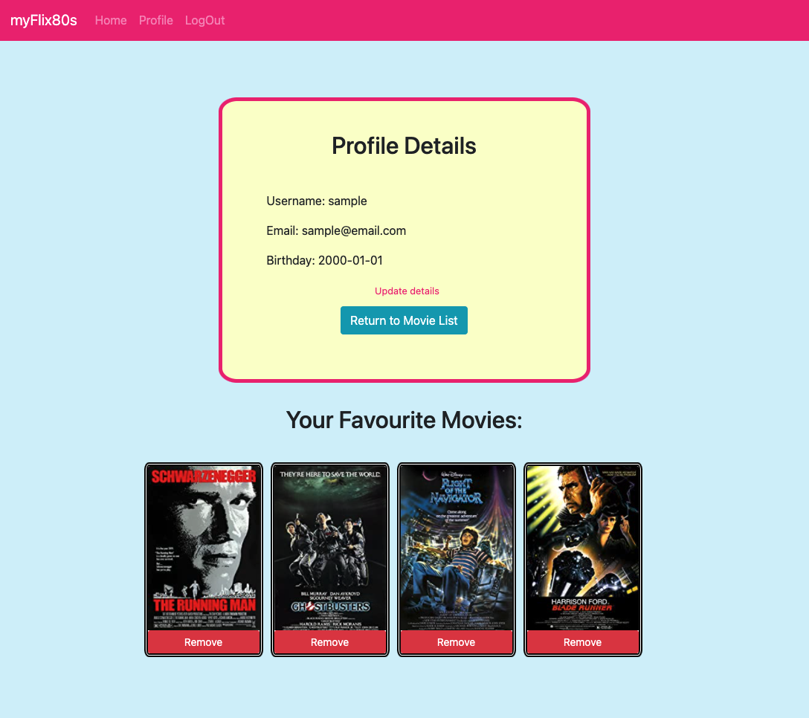

MyFlix80s
Overview
To access this app I developed a login and registration page to set up a new account. Once logged in, the main page displays film cards which the user can explore.


Users can choose to navigate to pages to read about each film, different genres and directors of the '80s era. They can also add films to a dynamic list of their favourites.
They can also view their profile details, stored on mongoDB, where there's the option to update and delete their profile.

